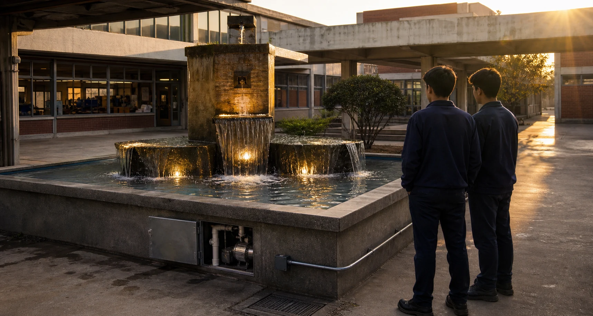
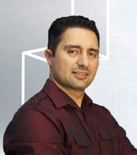

Curiosity came before opportunity.
Freddy grew up in Ecuador in a home where resources were limited, parts of the roof were unfinished, and progress required work from an early age. Without a father in the home, he learned young that responsibility could not be postponed.
He worked while studying, learned welding from a neighbor, spent time in kitchens and a pharmacy, and kept reading, drawing, and asking how things worked. Those early years did not give him an easy path. They gave him the discipline to build one.
When very little is guaranteed, consistency becomes a form of power.
The fountain that inspired a lifelong pursuit of precision.
A fountain at his technical high school had been broken for years. Freddy and his classmate Javier asked to take responsibility for it. They rebuilt the motor connections, conduit, piping, openings, and lighting until water moved through the fountain again.
The project earned the highest grade, but the deeper reward was seeing an abandoned system return to life through planning, technical work, and persistence. It began a lifelong pursuit of precision—and a commitment to understand the whole system, solve each problem with discipline, and leave every result better than he found it.


Persistence turned a language barrier into opportunity.
When Freddy came to the United States, he saw possibility everywhere—but the language barrier made even familiar skills difficult to communicate. He worked during the day and trained his ear at night, listening, repeating, and learning with the same persistence he brought to technical work.
That period sharpened his understanding of communication. Knowledge matters, but teams also need information delivered clearly, calmly, and in a form people can act on. HardBid Consulting carries that lesson into every review.
A difficult beginning taught him not only how to work—but how to translate complexity into confidence.
From technical foundations to construction leadership.
Freddy’s technical foundation began in Ecuador, where he trained in electrical systems, motor rewinding, industrial electronics and controls, and residential wiring. In the United States, he built his career from the field upward through welding, fabrication, detailed interiors, industrial construction, mechanical systems, active facilities, and team leadership—each experience sharpening his precision, planning, and understanding of how complete systems work.
Through UA Local 250, Freddy strengthened that professional discipline through pipefitting and detailer training, skilled craft standards, safety culture, and teamwork. The union experience sharpened his technical knowledge, field coordination, and respect for collective responsibility—standards he continues to bring to HardBid Consulting.
As a superintendent and field leader, he learned to remain calm, take ownership, return to the source, focus on solutions, and help others perform with confidence. That field judgment and creative visualization lead to clearer, more accurate decisions.
HardBid Consulting turns that experience toward the moment every contractor must carry the number.
Bidding compresses enormous responsibility into a short window. Plans change. Details are incomplete. Scope crosses trade boundaries. Quantities must be traced, pricing inputs gathered, and assumptions controlled before the deadline arrives.
HardBid Consulting was created to make that process more organized, more understandable, and more responsive. Its promise is not perfection without review. Its promise is disciplined work: document the source, identify uncertainty, communicate the gap, and prepare the contractor to make the final decision with greater clarity.